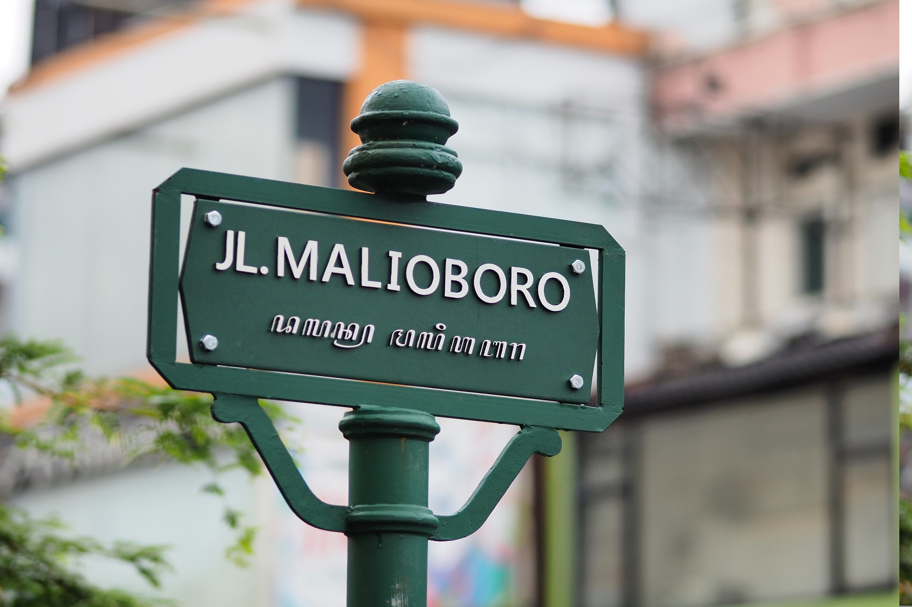

Temukan Tempat Wisata Menarik
Hanya di Ayo Dolan
Wisata Populer
-

Borobudur
Borobudur adalah sebuah candi Buddha yang terletak di Borobudur, Magelang, Jawa Tengah, Indonesia.
Baca Selengkapnya -

Prambanan
Candi Prambanan atau Candi Roro Jonggrang adalah kompleks candi Hindu terbesar di Indonesia yang dibangun pada abad ke-9 masehi.
Baca Selengkapnya -

Malioboro
Malioboro merupakan jalan dari tiga jalan di Kota Yogyakarta yang membentang dari Tugu Yogyakarta hingga ke perempatan Kantor Pos Yogyakarta.
Baca Selengkapnya
Tentang Kami
Ayo Dolan adalah sebuah platform yang dibuat untuk berbagi informasi tentang lokasi pariwisata yang menarik. Platform ini berbasis komunitas, setiap orang dapat merekomendasikan lokasi wisata yang mereka ketahui. Dengan adanya platform ini diharapkan dapat meningkatkan potensi pariwisata yang bisa dihasilkan terutama pada lokasi wisata yang masih belum populer.
— Ayo Dolan